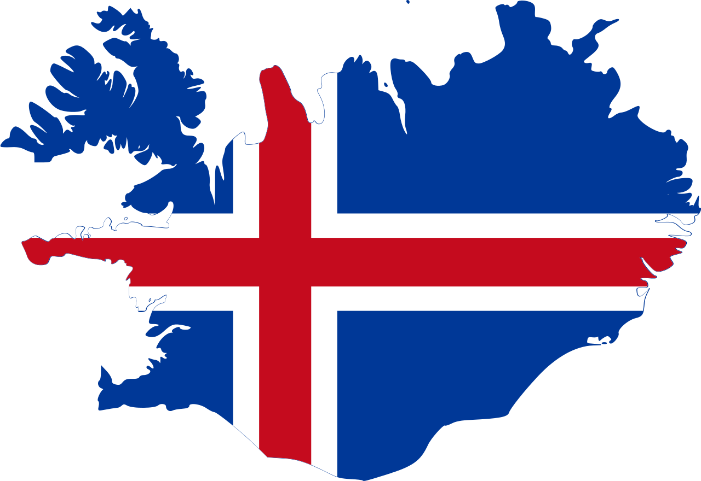

Informações
e
Dicas
Guia com Dicas para Visitar a Islândia
- Alugue um carro: Explorar a Islândia de carro oferece liberdade e conforto. -se de que o veículo esteja preparado para estradas de inverno, especialmente se para visitar a ilha nos meses mais frios.
- Clima imprevisível: O clima da Islândia muda rapidamente. Sempre leve uma jaqueta impermeável e vista-se em camadas.
- Reserve com antecedência: A Islândia é um destino turístico popular, e as atrações, especialmente como a Lagoa Azul, podem lotar. Reserve entradas e reserva com bastante antecedência, principalmente durante o verão.
- Respeite a natureza: A Islândia é conhecida por sua paisagem intocada. Sempre respeitadas as regulamentações locais, como não sair das trilhas marcadas para proteger a flora e a fauna locais.

Você Sabia?
Cascata de Gullfoss
- Gullfoss significa “Cachoeira Dourada” em islandês. O nome vem do efeito dourado que o sol cria ao refletir na água da cachoeira
- Formação Geológica: A cachoeira é formada pelo rio Hvítá, que flui do glaciar Langjökull. Ela tem duas quedas distintas, uma de 11 metros e outra de 21 metros, totalizando 32 metros de altura
- Arco-íris Mágicos: Em dias ensolarados, a névoa criada pela queda d’água frequentemente forma belos arco-íris, tornando a vista ainda mais espetacular
Blue Lagoon
- Origem Geotérmica: A lagoa foi formada em 1976 perto da planta geotérmica de Svartsengi. A água é aquecida naturalmente por atividade vulcânica subterrânea.
- Benefícios para a Pele: A água rica em minerais, como sílica e enxofre, é conhecida por suas propriedades curativas, especialmente para condições de pele como psoríase.
- Cor Azul: A cor azul-leitosa da água vem da alta concentração de sílica, que reflete a luz de forma especial.
Aurora Boreal
- Mitos e Lendas: Na mitologia islandesa, a Aurora era vista como reflexos das armaduras das Valquírias ou sinais dos deuses, carregando uma aura mística.
- Experiência Completa: Existem passeios guiados que levam turistas a locais afastados, aumentando as chances de ver o fenômeno. Muitos passeios incluem fotografias profissionais.
- Atividade Solar: A intensidade da Aurora depende do ciclo solar de 11 anos, com maiores chances de visualização durante o pico de atividade.